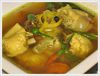

ไก่ต้มขมิ้น
เครื่องปรุง
ไก่บ้าน 100 กรัม หรือ 1 ตัว
ตะไคร้ 30 กรัม หรือ 2 ต้น
ขมิ้น 10 กรัม หรือ 2 นิ้ว
หอมแดง 45 กรัม หรือ 5 หัว
กระเทียม 30 กรัม หรือ 3 หัว
ข่า 50 กรัม หรือ 7 แว่น
เกลือป่น 5 กรัม หรือ 2 ช้อนชา
ส้มแขก 5 กรัม หรือ 5 ชิ้น
1. ล้างไก่ให้สะอาด แล้วสับชิ้นพอคำ
2. ทุบตะไคร้ให้แตก หั่นเป็นท่อน 2-3 นิ้ว ทุบข่า ขมิ้น แล้วบุบหอมแดง กระเทียม
3. เอาน้ำ 4 ถ้วยใส่หม้อตั้งไฟ พอเดือด ใส่เครื่องที่เตรียมไว้ (ข้อ 2) ต้มสักพักจนเครื่องหอม ใส่ส้มแขก
4. ใส่ไก่ต้มจนสุก ใส่เกลือ น้ำตาล ปรุงรสตามชอบ ยกลง
หมายเหตุ ควรให้มีรสเปรี้ยว โดยใช้ส้มแขก หากไม่มีส้มแขกสามารถใช้ส้มมะขามแทนได้
ไก่ต้มขมิ้น เป็นอาหารที่มีรสเปรี้ยวนำ เหมาะสำหรับคนธาตุน้ำ เป็นหวัดเรื้อรัง รับประทานเผ็ด ๆ แก้ไอ ขับเสมหะ เพิ่มความสดชื่นให้กับร่างกาย